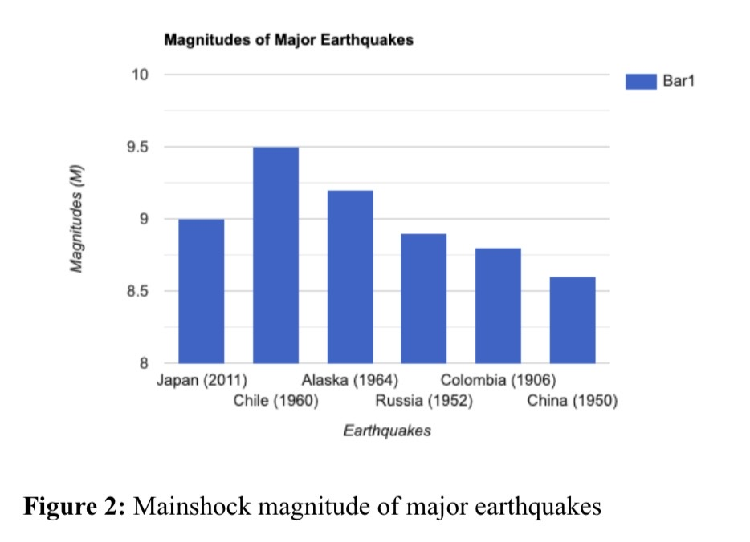
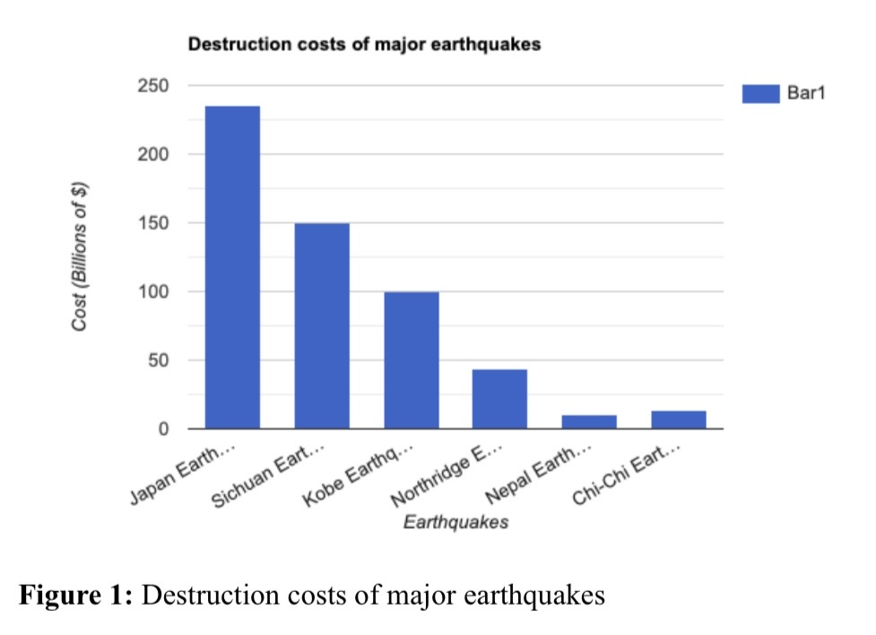
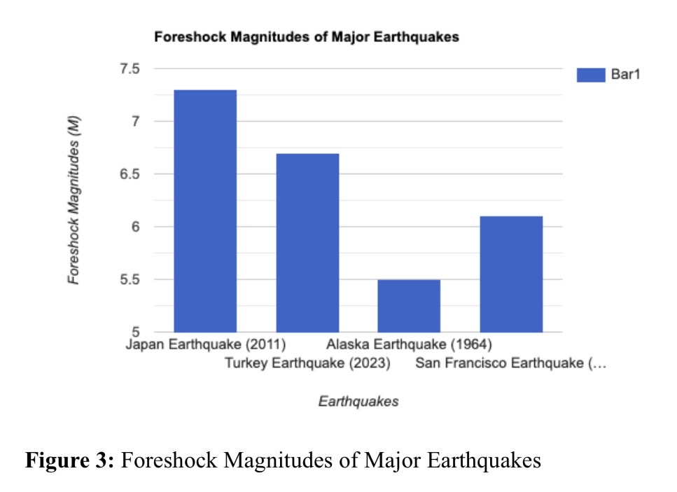

Introduction
With cutting-edge technological advancements occurring every day, seismologists are getting closer to successfully predicting earthquakes. Although significant challenges remain, several factors serve as reliable indicators of a potential earthquake. Understanding foreshocks, changes in seismic velocity, seismic gaps, and surface deformation is important because these factors may help seismologists detect earthquakes earlier and improve public preparedness. This paper examines how these four factors changed before a major earthquake to evaluate their reliability as predictive indicators. It also discusses the future of earthquake prediction and how artificial intelligence and machine learning are beginning to play larger roles in seismic research. These technologies can help analyze changes in the four predictive factors more efficiently, improving earthquake forecasting and public preparedness.
Data
To determine whether these four factors can serve as indicators of a potential earthquake, it is important to examine how they changed before a major earthquake. One of the most destructive earthquakes in history was the 2011 Japan earthquake, which occurred on March 11, 2011. The earthquake occurred at a convergent plate boundary along the Japan Trench, where the Pacific Plate subducts beneath the North American Plate (Saito et al., 2011). It had a magnitude of 9.0 and resulted in approximately 16,000 deaths, making it one of the largest and deadliest earthquakes in recorded history (Fig. 2).

Furthermore, the disaster caused an estimated $235 billion in damages, making it one of the costliest natural disasters ever recorded (Fig. 1). As shown in Figure 1, the 2011 Japan earthquake caused substantially greater economic losses than many other major earthquakes.

The earthquake also triggered the Fukushima nuclear disaster, where the earthquake and resulting tsunami disabled backup generators at the Fukushima Daiichi Nuclear Power Plant, leading to reactor cooling failures and the release of radioactive materials into the environment (Saito et al., 2011).
Examining how the four predictive factors changed before the 2011 Japan earthquake allows conclusions to be drawn about whether they can serve as indicators of a potential earthquake. The earthquake was preceded by a magnitude 7.3 foreshock, which was significantly greater than the typical foreshock range of 2.0–6.0 (Fig. 3) (Yamashita et al., 2021). Compared with other major earthquakes, the 2011 Japan earthquake had one of the largest recorded foreshocks. This foreshock occurred only two days before the mainshock, supporting the clock advance hypothesis that a large foreshock can accelerate fault rupture by increasing stress on a nearby fault.

In addition to the large foreshock, significant changes in seismic velocity were recorded before the earthquake. The P-wave to S-wave velocity ratio increased by approximately 12.5%, suggesting extensive cracking within the Earth’s crust (Niu et al., 2012). This substantial increase in the ratio serves as a strong indicator of an incoming earthquake because it reflects changes in the surrounding rock before rupture.
The earthquake also occurred within a seismic gap region, where the previous major earthquake had occurred in 1703. This suggests that stress accumulated over several centuries before eventually exceeding the friction holding the fault together, resulting in a major rupture. Finally, surface deformation was observed prior to the earthquake. GPS and InSAR measurements recorded both horizontal and vertical displacement during the weeks and months leading up to the event. Horizontal displacement measured approximately 2–4 cm in the months before the earthquake, while some GPS stations recorded eastward movement of 2–5 cm during the final days before the mainshock (Koarai et al., 2012). Vertical displacement increased from approximately 1–2 cm months beforehand to nearly 5 cm two to three days before the earthquake. Together, these measurements suggest increasing strain accumulation and possible slow-slip events prior to rupture (Kato et al., 2012).
Discussion
Based on the data showing how the four factors changed before the 2011 Japan Earthquake, it is clear that they can play a role in indicating a potential earthquake. As demonstrated by Figures 1 and 2, the 2011 Japan Earthquake was one of the largest and most destructive earthquakes in recorded history. To better warn the public and improve preparedness before such a large earthquake occurs, it is important to examine these four factors and how they change to assess the likelihood of a potential incoming earthquake.
As shown in Figure 3, a magnitude 7.3 foreshock occurred only two days before the mainshock. This suggests that the large foreshock transferred significant stress to the nearby fault, advancing the fault’s “seismic clock” and contributing to the mainshock occurring shortly afterward. Identifying a large foreshock may help inform the public that a more significant earthquake could occur soon, allowing individuals time to move to safer areas. However, foreshocks can also present limitations because they occasionally produce false positives. In some cases, what appears to be a foreshock is actually the mainshock itself. Frequent false positives may reduce public trust in earthquake warnings. Continued research is therefore needed to help scientists more reliably distinguish foreshocks from mainshocks using seismic patterns and data. Even so, recognizing the possibility of a larger earthquake following a foreshock remains an important precaution.
In the 2011 Japan Earthquake, changes in seismic velocity could also have provided an early warning. The P-wave to S-wave velocity ratio increased by approximately 12.5% before the earthquake. This increase can be attributed to cracks or fluids within the Earth’s crust, indicating conditions that may precede an earthquake. These changes can reduce the friction holding a fault together, increasing the likelihood of rupture. Seismic velocity is a valuable predictive tool because even very small changes can be detected using ambient seismic noise interferometry. Unlike foreshocks, seismic velocity changes are also less susceptible to false positives, making them a more reliable indicator for early warning.
The third factor, seismic gaps, was also present before the 2011 Japan Earthquake, as the previous major earthquake in that region occurred in 1703. After centuries of stress accumulation, the stress eventually exceeded the friction holding the fault together, resulting in a major rupture. Because seismic gaps often remain inactive for long periods before suddenly rupturing, many people living nearby may not recognize the potential risk. Informing communities when they live near long-dormant faults can help improve earthquake preparedness and encourage families to develop emergency plans. Government agencies should continue working alongside seismologists to communicate information about seismic gap regions effectively.
The final factor, surface deformation, was measured using GPS and InSAR before the 2011 Japan Earthquake. Horizontal displacement measured approximately 2–4 cm in the months leading up to the earthquake and 2–5 cm during the days immediately before the mainshock. Vertical displacement increased from approximately 1–2 cm months beforehand to around 5 cm shortly before the earthquake. These measurements suggest that stress was accumulating along the fault as movement became increasingly restricted. Eventually, the accumulated strain exceeded the fault’s strength, resulting in rupture. Surface deformation is particularly valuable because GPS and InSAR can detect extremely small changes that may otherwise appear insignificant but still provide important information about an approaching earthquake.
It is important to recognize that all four predictive factors may not be present before every earthquake. The 2011 Japan Earthquake is one example in which all four factors were observed prior to the event. Other earthquakes may exhibit only one or two of these indicators. Even so, these factors should still be considered valuable warning signs when assessing earthquake risk. Effective early warning systems and clear communication of seismic data can help reduce both casualties and economic losses.
The future of earthquake prediction is promising with continued advancements in artificial intelligence and machine learning. These technologies can improve automated detection, forecasting, and seismic imaging while processing large amounts of data more efficiently than traditional methods. AI can also identify subtle anomalies that may be difficult for humans to detect, making it especially valuable for early warning systems. In addition, AI-generated 3D models have the potential to improve GPS and InSAR analyses by identifying even smaller changes in surface deformation. Despite these advantages, challenges remain. Many AI models are difficult for the public to interpret, can be expensive to implement, and raise concerns regarding transparency, bias, and accuracy. Nevertheless, the potential benefits of AI and machine learning appear to outweigh these limitations. As these technologies continue to improve, they are likely to play an increasingly important role in helping seismologists detect earthquakes and improve public safety.
Conclusion
Foreshocks, changes in seismic velocity, seismic gaps, and surface deformation are all tools that can be used by seismologists to detect the possibility of an incoming earthquake and assist the public in getting to safety. These tools may not be present for all earthquakes, but when changes in these factors are present before an earthquake, there is a good chance of a possibility of an incoming earthquake, which should be used to get people to safety. The 2011 Japan Earthquake was a good example of how these factors changed before the earthquake and could have been used to get more people to safety. Detection of earthquakes will only get better with advancements in AI and Machine learning, giving the seismic field a fruitful future ahead.
References
- Kato, A., Obara, K., Igarashi, T., Tsuruoka, H., Nakagawa, S., & Hirata, N. (2012). Propagation of slow slip leading up to the 2011 Mw 9.0 Tohoku-Oki earthquake. Science, 335(6069), 705–708.
- Koarai, M., Kato, A., & Hattori, K. (2012). Surface deformation before and after the 2011 Tohoku earthquake. In Proceedings of the International Symposium on Geodesy for Earthquake and Natural Hazards.
- Niu, F., Silver, P. G., Daley, T. M., Cheng, X., & Majer, E. L. (2012). Preseismic velocity changes observed from active source monitoring of the Parkfield SAFOD drill site. Nature, 454, 204–208.
- Saito, T., Ito, Y., Inazu, D., & Hino, R. (2011). Tsunami source of the 2011 Tohoku–Oki earthquake, Japan: Inversion analysis based on dispersive tsunami simulations. Geophysical Research Letters, 38(7).
- Yamashita, Y., Yakiwara, H., Asano, Y., Shimizu, H., Uchida, K., Hirano, S., & Kanehara, H. (2021). Migrating tremor off southern Kyushu as evidence for slow slip of a shallow subduction interface. Science, 348(6235), 676–679.